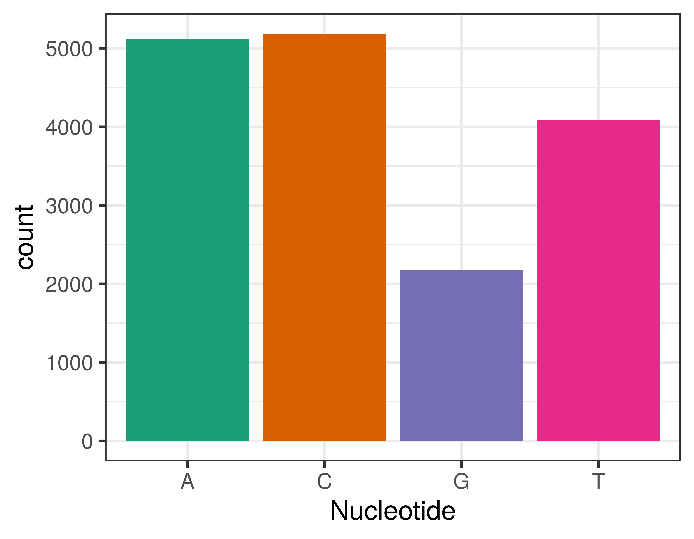
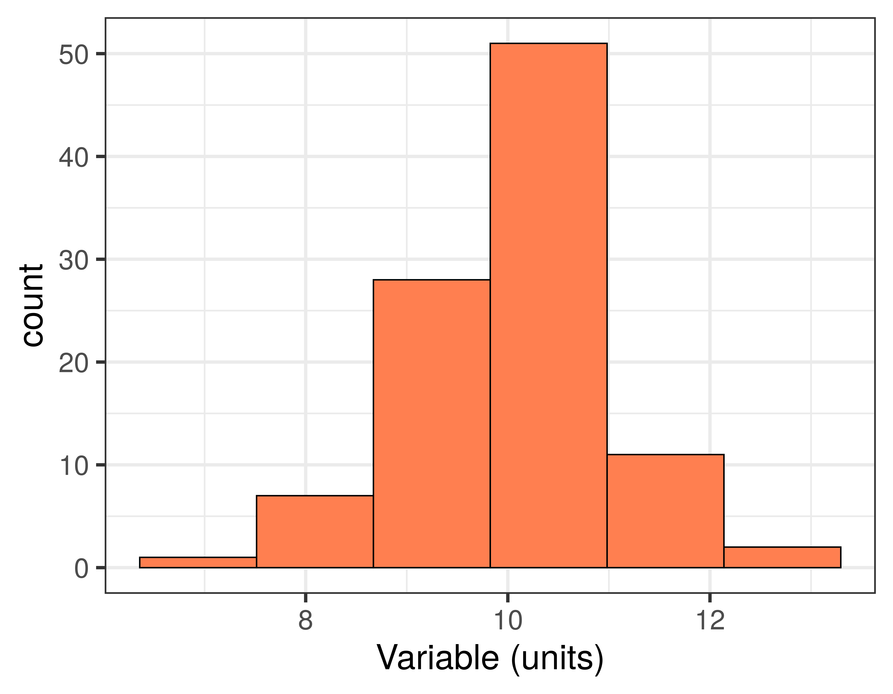
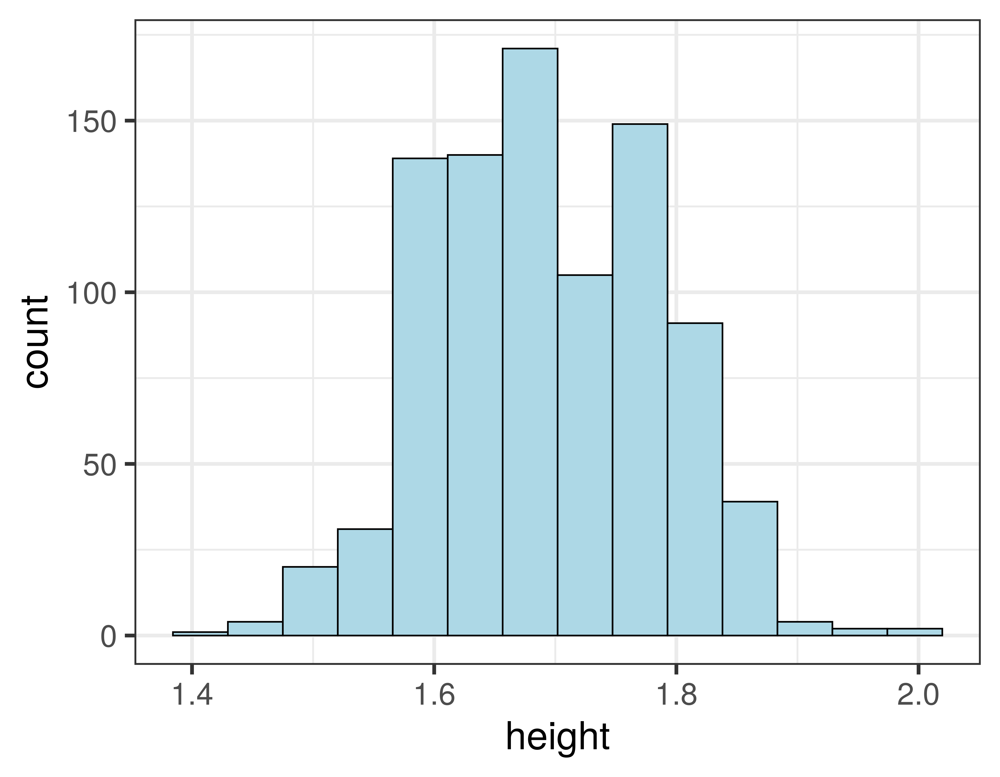
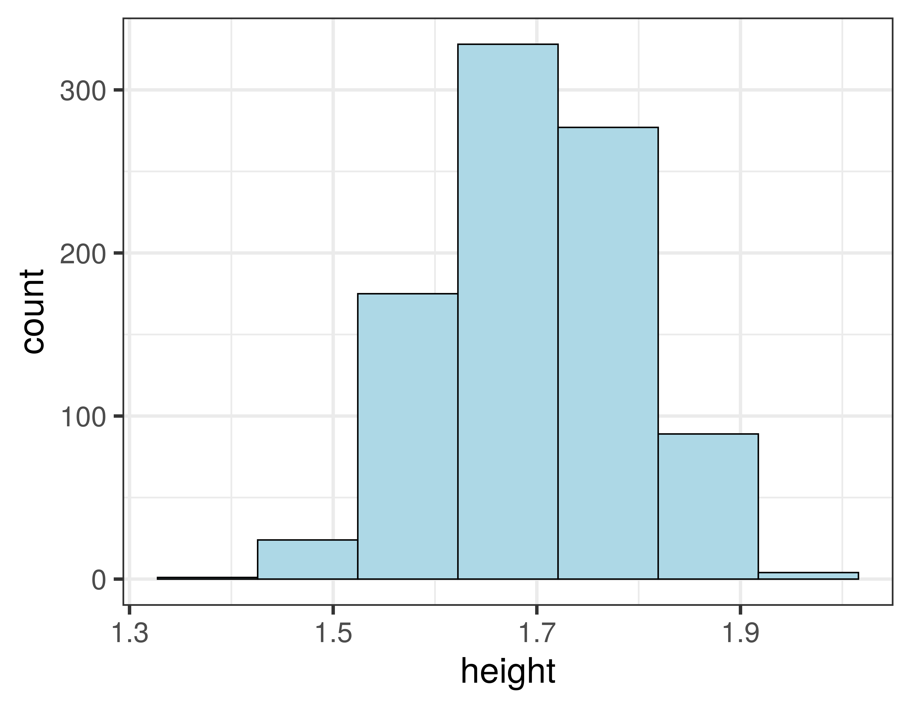
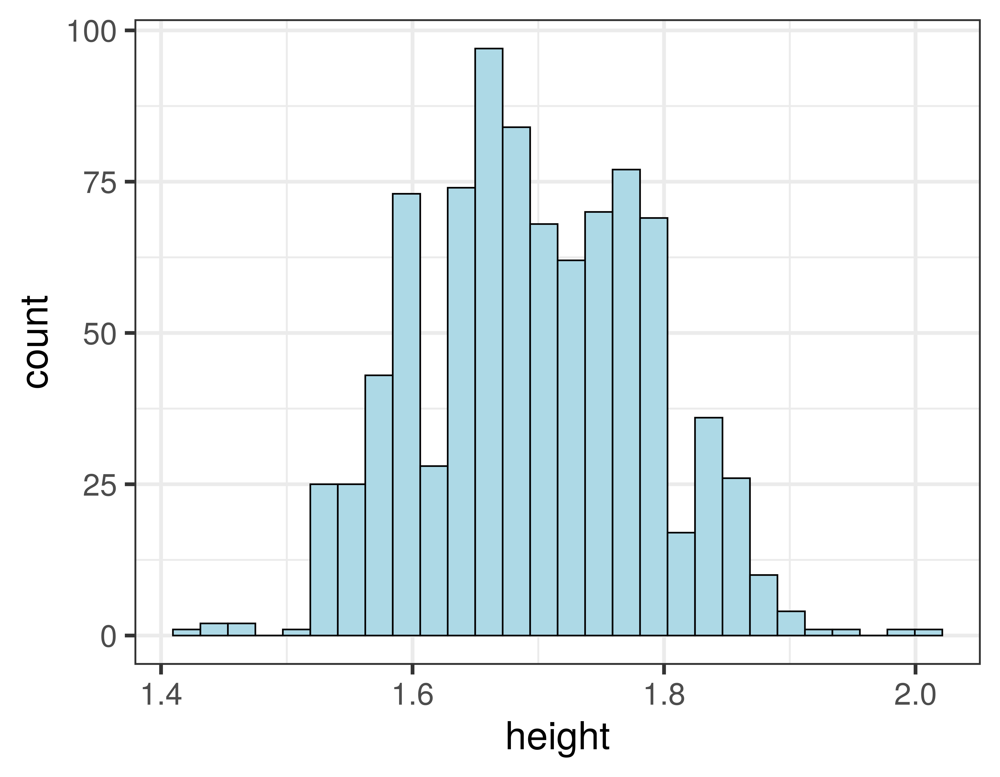
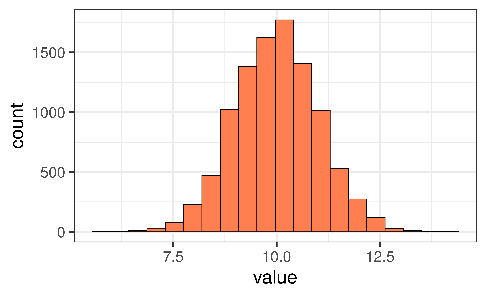
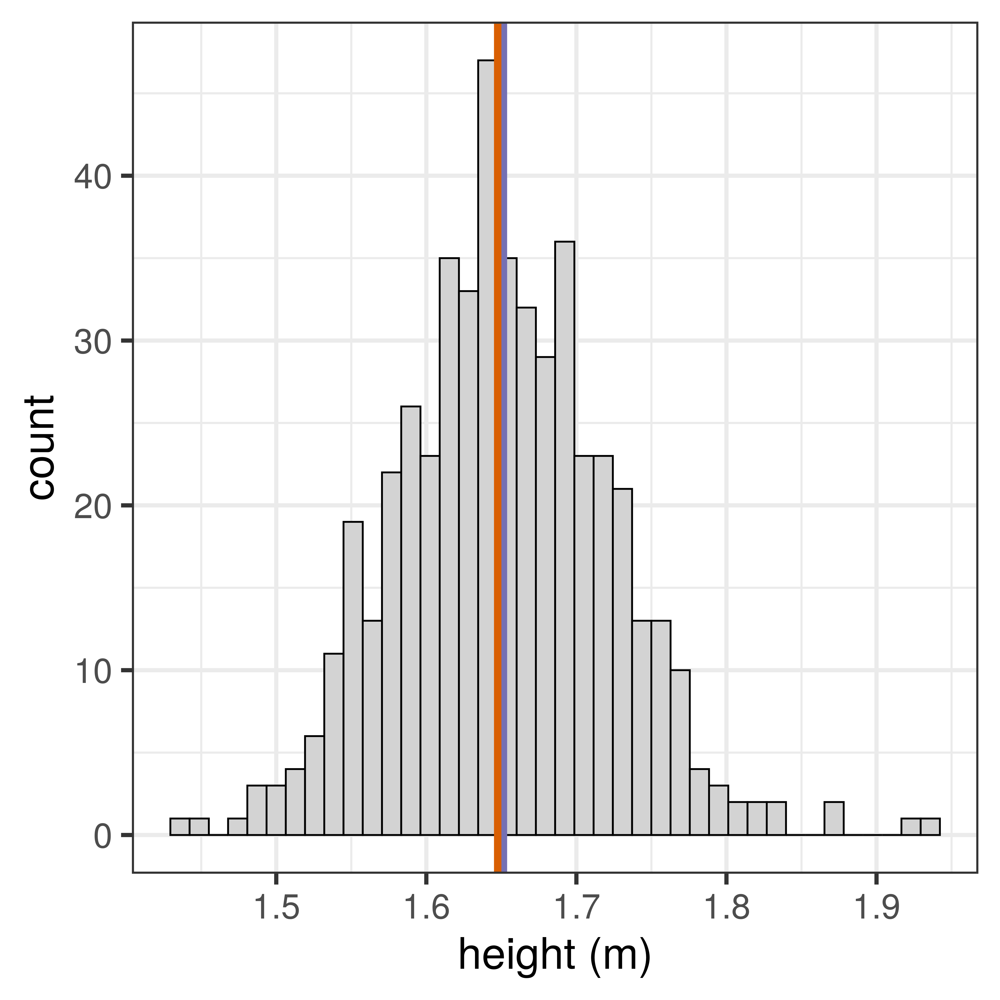
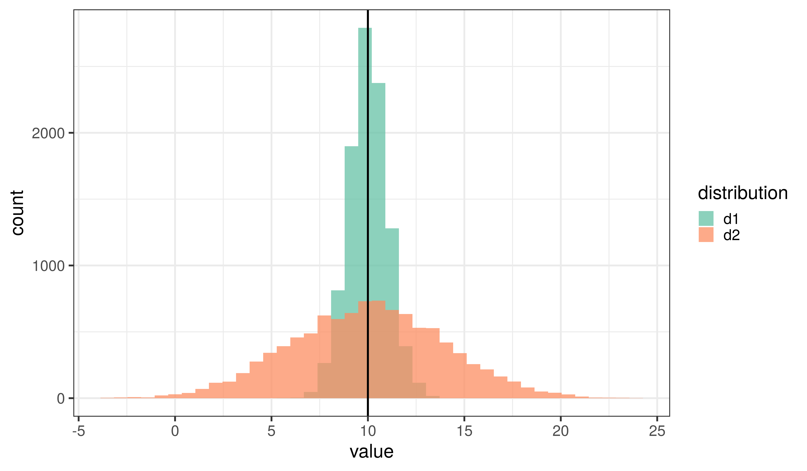

Data Analysis 2
BIOL10272: Practical Techniques
Dr Axel Barlow
email: axel.barlow@ntu.ac.uk
Data analysis 2
- Data visualisation
- Single categorical or ordinal variable: barcharts
- Single quantitative variable: histograms
- Data distributions
- Mean, median, and mode
- Sample variability: range and standard deviation
Data visualisation
A tool for data exploration and communication
A tool for data exploration and communication
Single categorical or ordinal variable
Barcharts
- We can visualise a single categorical or ordinal variable using a barchart.
- Categories go on the x axis and the counts go on the y axis.

Barchart example
- Human mitochondrial DNA; 4 nucleotides (A,C,G,T); 16,568 bp
## V1
## 1 GATCACAGGTCTATCACCCTATTAACCACTCACGGGAGCTCTCCATGCATTTGGTATTTTCGTCTGGGGGGTGTGCACGCGA
## 2 TAGCATTGCGAGACGCTGGAGCCGGAGCACCCTATGTCGCAGTATCTGTCTTTGATTCCTGCCCCATCCCATTATTTATCGC
## 3 ACCTACGTTCAATATTACAGGCGAACATACTTACTAAAGTGTGTTAATTAATTAATGCTTGTAGGACATAATAATAACAATT
## 4 GAATGTCTGCACAGCCGCTTTCCACACAGACATCATAACAAAAAATTTCCACCAAACCCCCCCTCCCCCGCTTCTGGCCACA
## 5 GCACTTAAACACATCTCTGCCAAACCCCAAAAACAAAGAACCCTAACACCAGCCTAACCAGATTTCAAATTTTATCTTTTGG
## 6 CGGTATGCACTTTTAACAGTCACCCCCCAACTAACACATTATTTTCCCCTCCCACTCCCATACTACTAATCTCATCAATACA
## 7 ACCCCCGCCCATCCTACCCAGCACACACACACCGCTGCTAACCCCATACCCCGAACCAACCAAACCCCAAAGACACCCCCCA
## 8 CAGTTTATGTAGCTTACCTCCTCAAAGCAATACACTGAAAATGTTTAGACGGGCTCACATCACCCCATAAACAAATAGGTTT
## 9 GGTCCTAGCCTTTCTATTAGCTCTTAGTAAGATTACACATGCAAGCATCCCCGTTCCAGTGAGTTCACCCTCTAAATCACCA
## 10 CGATCAAAAGGGACAAGCATCAAGCACGCAGCAATGCAGCTCAAAACGCTTAGCCTAGCCACACCCCCACGGGAAACAGCAG
## 11 TGATTAACCTTTAGCAATAAACGAAAGTTTAACTAAGCTATACTAACCCCAGGGTTGGTCAATTTCGTGCCAGCCACCGCGG
## 12 TCACACGATTAACCCAAGTCAATAGAAGCCGGCGTAAAGAGTGTTTTAGATCACCCCCTCCCCAATAAAGCTAAAACTCACC
## 13 TGAGTTGTAAAAAACTCCAGTTGACACAAAATAGACTACGAAAGTGGCTTTAACATATCTGAACACACAATAGCTAAGACCC
Barchart example
- Human mitochondrial DNA; 4 nucleotides (A,C,G,T); 16,568 bp

Single quantitative variable
Histograms
- We can visualise a single quantitative variable (continuous or discrete) using a histogram
- First we need to bin our data: sort into non-overlapping intervals of equal size
- The bins go on the x axis and the counts go on the y axis.

Difference between barcharts and histograms
- Typically barcharts will have spaces between the bars
- In histograms, the bars are always touching
- Barchart x axes are categorical
- Histogram x axes are quantitative (typically have units)
Barchart

Histogram

Histogram example
- Heights of 898 people, in metres
## height
## 1 1.86
## 2 1.76
## 3 1.75
## 4 1.75
## 5 1.87
## 6 1.84
## 7 1.66
## 8 1.66
## 9 1.80
## 10 1.73
## 11 1.79
## 12 1.74
## 13 1.70
- Binned data
## start finish counts
## 1 1.40 1.45 3
## 2 1.45 1.50 3
## 3 1.50 1.55 44
## 4 1.55 1.60 122
## 5 1.60 1.65 163
## 6 1.65 1.70 171
## 7 1.70 1.75 149
## 8 1.75 1.80 146
## 9 1.80 1.85 76
## 10 1.85 1.90 13
## 11 1.90 1.95 6
## 12 1.95 2.00 1
## 13 2.00 2.05 1
Histogram example
- Using 14 bins

Effect of bin size
- Using 7 bins

Effect of bin size
- Using 28 bins

Data distribution
Data distribution
- The shape of the histogram can be called a distribution
- Height is an example of the normal distribution
- It looks (more or less) like a symmetrical bell
- Very tall and very short people are rare, most people are around the middle
- Many other variables: birth weight, blood pressure, measurement error


Describing distributions for quantitative variables

Mean, median, and mode
An average
- An average describes the central position of the distribution
- It summarises the entire distribution in a single value
- We use three types:
meanmedianmode

How are they calculated?
Mean
- Add all values together and divide by number of observations
- Good for continuous quantitative variables, discrete variables may need rounding
Median
- Arrange values from smallest to largest and pick the middle one
- Good for ordinal and quantitative continuous and discrete variables
Mode
- The most frequently occurring value
- Good for ordinal and discrete quantitative variables
Quantitative discrete variable example
1 2 3 3 4 4 4 5 5 5 5 6 6 6 7 7 8 9 10
Mean
1+2+3+3+4+4+4+5+5+5+5+6+6+6+7+7+8+9+10 = 100
100 / 19 = 5.263158
Median
5
Mode
5
Continuous variable example
- Height of 500 women, plotted as a histogram

mean = 1.651378
median = 1.6475637
- Mean and median are virtually identical
- A feature of the normal distribution
- So why do we need different measures?
- Not all variables are normally distributed
Ancient DNA fragment length
- DNA in ancient samples is highly fragmented
- The fragment lengths have a skewed distribution


800 year old cat (Carl Vivian, Uni Leicester)
mean = 45.8054171
median = 41
mode = 31
Sample variability
An average doesn't give the whole picture

Sample variability
- Variability describes how narrow or spread out the distribution is
- Also called dispersion, scatter or spread
- We will look at two ways of measuring variability:
Range
- The maximum minus the minimum values
Standard deviation
- More complex
- Positive number in same units as the data
- Bigger numbers indicate higher variability
Range

- Mean = 15.0149312
- Range = 27.6507856 - 3.017839 = 24.6329467
Standard deviation
- Complex mathematical formula, the value is easy to understand
- In research science, we would just use a computer to calculate!
- square root (sum of squared differences from mean, divided by sample size minus 1)
| Human | Height | Mean | Difference | Squared |
|---|---|---|---|---|
| 1 | 160 | 165.33 | -5.33 | 28.44 |
| 2 | 166 | 165.33 | 0.67 | 0.44 |
| 3 | 168 | 165.33 | 2.67 | 7.11 |
| 4 | 161 | 165.33 | -4.33 | 18.78 |
| 5 | 167 | 165.33 | 1.67 | 2.78 |
| 6 | 170 | 165.33 | 4.67 | 21.78 |
| TOTAL | 79.33 |
- SD = square root (sum of squares / 6 - 1) = square root (79.33/5) = 3.98
Or just use a computer
heights <- c(160, 166, 168, 161, 167, 170)
mean(heights)
## [1] 165.3333
sd(heights)
## [1] 3.983298
Now isn't that easier :)
Standard deviation and the normal distribution

- Mean = 15.0149312, Standard deviation = 3.0303673
Standard deviation and the normal distribution

- Mean = 15.0149312, Standard deviation = 3.0303673
- 68% of observations fall within 1 SD of the mean, 95% with 2 SDs, and 99.7% within 3 SDs
Data analysis 2
- Data visualisation
- Single categorical or ordinal variable: barcharts
- Single quantitative variable: histograms
- Data distributions
- Mean, median, and mode
- Sample variability: range and standard deviatio
Next time
Analysis of two variables, and hypothesis testing